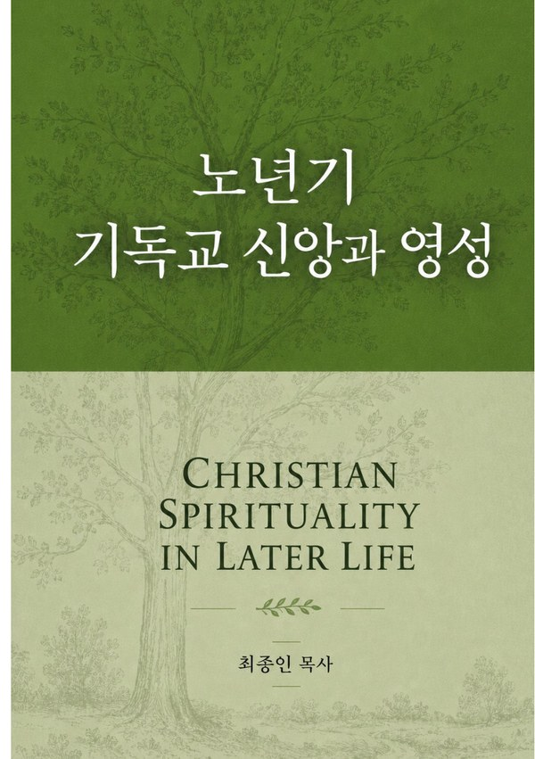

← 저서 목록으로
노년 신학

노년기 기독교 신앙과 영성
초고령사회에서 다시 읽는 노년의 영적 여정
Christian Spirituality in Later Life
주제 소개
초고령사회 속에서 노년을 단순한 쇠퇴가 아니라 하나님 앞에서 생애 전체를 다시 읽고 성숙하는 영적 여정으로 탐구한 책입니다. 노년학 이론과 성경 신학, 명화 묵상을 넘나들며 은퇴 후 정체성 재구성, 치매·질병 속 영성, 죽음 준비, 돌봄에서 동역으로 나아가는 한국 교회의 노년 사역을 제시합니다.
목차
- 머리말
- 1장. 노년기 영성의 필요
- 2장. 노년기 신앙 이해
- 3장. 노년기 신앙의 유익
- 4장. 노년의 영성은 왜 증가하는가
- 5장. 성경은 노년을 어떻게 보는가
- 6장. 인생 후반부에 신앙이 깊어진 성경 인물들
- 7장. 노년의 신앙은 어떻게 삶의 의미를 재구성하는가
- 8장. 노년과 신앙 공동체
- 9장. 질병, 치매, 장애와 영성
- 10장. 노년의 죽음 준비와 기독교 영성
- 11장. 노년 신앙의 위험과 왜곡
- 12장. 노년기 영성과 교회의 미래 · 맺음말